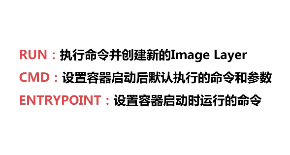

Dockerfile
FROM
用于加载最底层的系统层,想要在什么样的系统底层之上build我们自己的image就加载什么,如果是scratch则代表什么系统层都不引入也就是我们自己创建一个base image
最佳实践:
1.尽量使用官方的image 作为base image
1 | FROM scratch #制作base image |
LABEL
注释文档1
2
3LABEL maintainer="destinyjingkun@vip.qq.com"
LABEL version="1.0"
LABEL description="This is docker"
RUN
执行命令并创建新的Image Layer,每次运行Run之后都会生成一层新的Layer1
2RUN apt-get update && apt-get install -y vim \
&& rm -rf /var/lib/apt/lists/* #注意清理cache
最佳实践:
1.为了美观,复杂的RUN请使用反斜线进行换行.
2.避免无用分层,合并多条命令成一行.
WORKDIR
设定当前工作目录,如果目录文件不存在,则会自动创建目录并设定工作目录1
2
3
4WORKDIR /root #相当于cd /root,不使用RUN cd /root是因为RUN会生成一个新的Layer层
WORKDIR /test #如果不存在则相当于mkdir test && cd test
WORKDIR demo
RUN pwd #由于我们上面是在test目录下,而非在root下,所以此时的pwd应该是/test/demo
最佳实践:
1.不要用RUN cd !,尽量使用绝对目录
ADD & COPY
ADD附带解压,COPY不带解压1
2
3
4ADD test.tar.gz / #添加到根目录并解压
COPY test.tar.gz /#添加到根目录,不进行解压
WORKDIR /root
ADD hello test/ #/root/test/hello
最佳实践:
1.大部分情况,COPY优于ADD
2.ADD除了COPY还有额外的解压功能
3.添加远程文件/目录请使用curl或者wget!
ENV
设置环境变量1
2
3ENV MYSQL_VERSION 5.6
RUN apt-get install -y mysql-server="${MYSQL_VERSION}" \
&& rm -rf /var/lib/apt/lists/*
最佳实践:
1.常量的话尽量使用ENV,增加可维护性
CMD && ENTRYPOINT

CMD:
- 设置容器启动后默认执行的命令和参数
- 如果docker run指定了其它命令,CMD命令被忽略
1 | docker run -it [image] /bin/bash |
- 如果定义了多个CMD,只有最后一个会执行
1 | RUN echo "hello" |
ENTRYPOINT:
- 设置容器启动时运行的命令
- 让容器以应用程序或者服务的形式运行
- 不会被忽略,一定会执行
最佳实践:
1.写一个shell脚本作为entrypoint
2
ENTRYPOINT ["docker-entrypoint.sh"]
Shell && Exec格式
Shell:1
2
3RUN apt-get install -y vim
CMD echo "hello docker"
ENTRYPOINT echo "hello docker"
Exec:1
2
3RUN ["apt-get", "install", "-y", "vim"]
CMD ["/bin/echo", "hello docker"]
ENTRYPOINT ["/bin/echo", "hello docker"] #exec模式下,就不能直接使用echo 而是使用bin/下的echo命令
区别:1
2
3
4
5
6
7
8
9FROM ubuntu
ENV name Docker
ENTRYPOINT echo hello $name
#hello Docker
ENTRYPOINT ["/bin/echo" , "hello $name"]
#hello $name
#非shell命令下不识别$name
ENTRYPOINT ["/bin/bash", "-c" "echo hello $name"]
#hello Docker